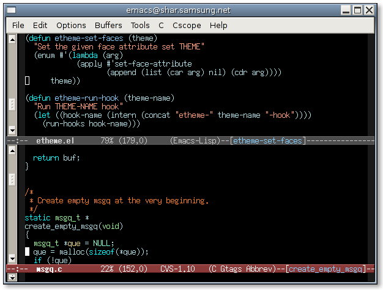
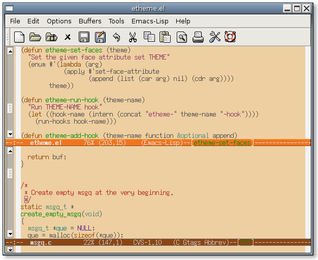
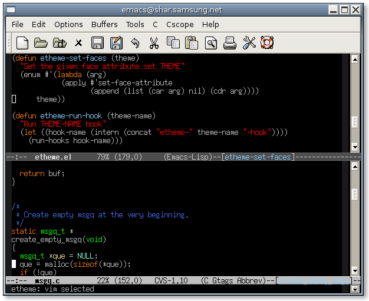
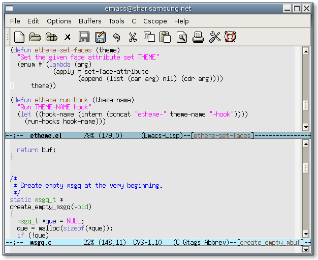
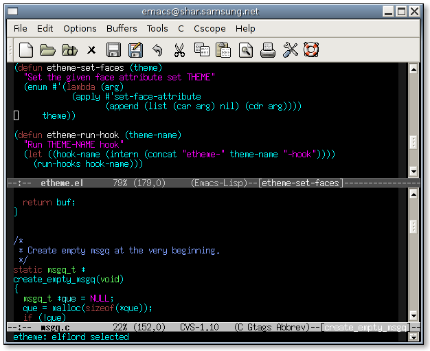

An easy way to change a set of attributes of various faces in GNU Emacs.
You can try to access the latest, unstable version of this software by acessing my anonymous CVS. Press Return to pass the authentification.
$ cvs -d :pserver:anonymous@www.cinsk.org:/root login password: <RET> $ cvs -d :pserver:anonymous@www.cinsk.org:/root co emacs-scripts ... $ cvs -d :pserver:anonymous@www.cinsk.org:/root logout
Append following codes in your $HOME/.emacs file:
(setq load-path (cons (expand-file-name "~/.emacs.d/") load-path)) (require 'etheme)
And copy the downloaded source into $HOME/.emacs.d/ directory.
In emacs session, you can change your theme using M-x etheme-set-theme command.





$Id$